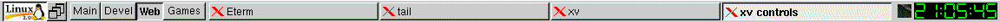
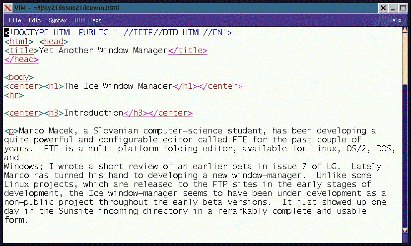
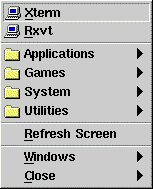

![[ TABLE OF CONTENTS ]](../gx/indexnew.gif)
![[ FRONT PAGE ]](../gx/homenew.gif)


Marco Macek, a Slovenian computer-science student, has been developing a quite powerful and configurable editor called FTE for the past couple of years. FTE is a multi-platform folding editor, available for Linux, OS/2, DOS, and Windows; I wrote a short review of an earlier beta in issue 7 of LG. Lately Marco has turned his hand to developing a new window-manager. Unlike some Linux projects, which are released to the FTP sites in the early stages of development, the Ice window-manager seems to have been under development as a non-public project throughout the early beta versions. It just showed up one day in the Sunsite incoming directory in a remarkably complete and usable form.
Lately window-managers seem to be proliferating, with offshoots and variants of fvwm predominating. Icewm is in large part inspired by the OS/2 Workplace Shell interface. Though OS/2 has been never gained the market acceptance its adherents have hoped for, the Workplace Shell is a remarkably advanced object-oriented GUI, and Macek has attempted to adapt some of its "look-and-feel" to the Linux environment. Another influence is the common Windows 95 interface, which does have some useful features worth emulating.
Win95's bottom-of-the-screen icon bar , with its cascading menus and dynamic
window indicators, has been nicely reproduced in Icewm. The equivalent of
the "Start" menu (which functions much like Win95's) has a "Linux" label with
a penguin icon.

The general appearance of the windows (borders, titlebars, et al) is very
reminiscent of OS/2. Various types of "X" kill buttons are available, but the
general appearance of the window-borders seems to be hard-coded; that is, not
configurable. Here's a screenshot of a typical window:

I liked the cascading mouse button menus, with a different menu shown for
each mouse button. The Enlightenment window-manager has a similar feature.
These menus are hierarchical and behave like their OS/2 equivalents.

This window-manager really doesn't have such compellingly new features that many long-time Fvwm2 or AfterStep users would want to adopt it, but for new Linux users more familiar with Win95 or OS/2, the similarities might serve to ease the transition. It compiled easily on my 2.0.30 system, and it seemed to be stable and dependable.
The source archive is available from the icewm home-page, as well as the sunsite FTP site. Icewm's home page also has Redhat RPM's of the source.